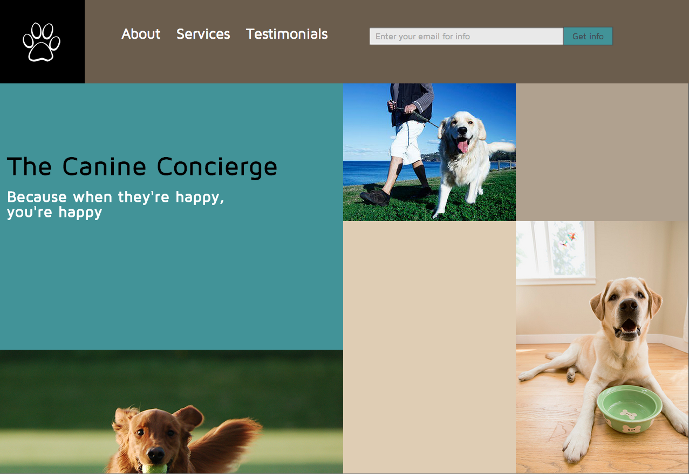
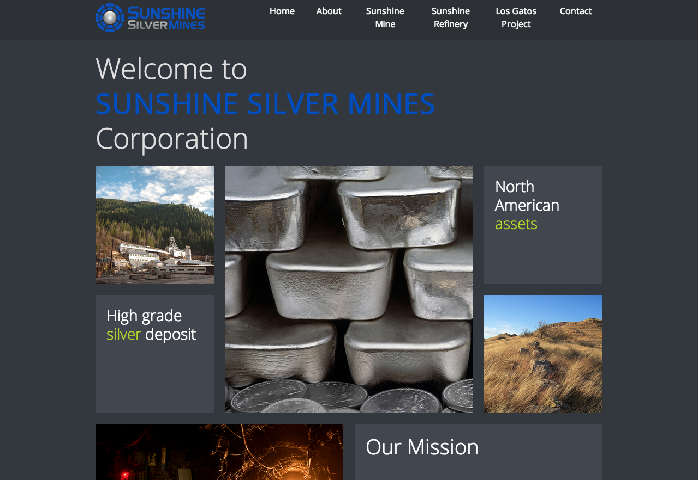
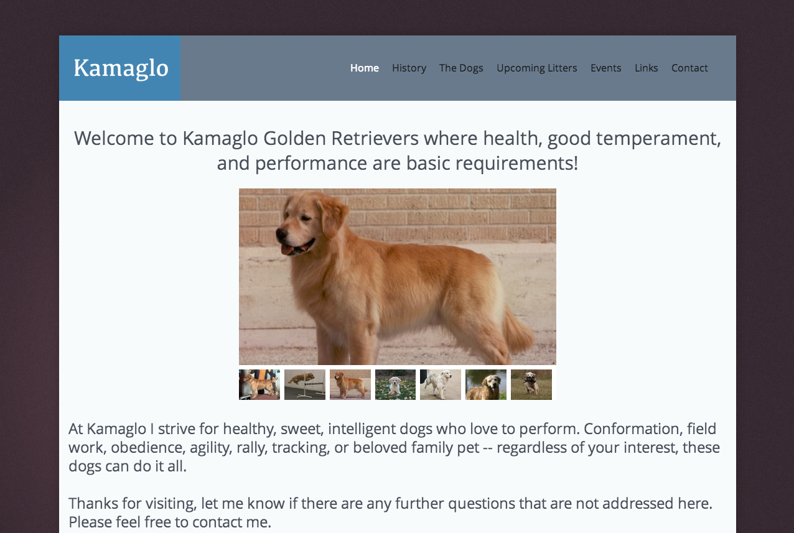
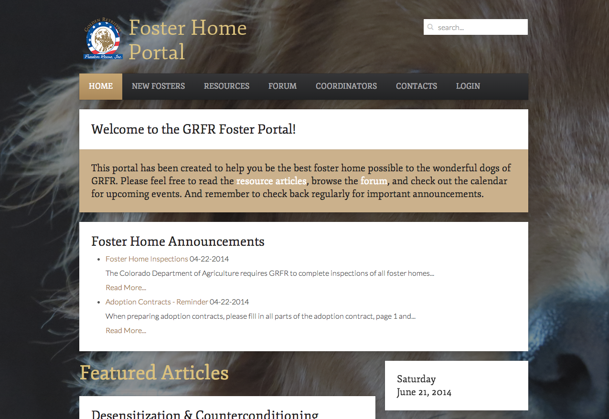

Home
I got a late start at all of this.
Unless you consider the Basic programming I did on my Apple 2E back in 1983.
Or the Fortran 77 I learned for my college courses. In which case I got an early start.
To me, this stuff is fun. A mental challenge that keeps you up late at night. And there's never an end point. So much to learn.
I'm doing this for fun. Does that make me weird? I hope so :).
I hope to be able to use my skills to help other people. I've done a little of that already (see Kamaglo, below).
About
Outside of this all-consuming hobby, I'm a corporate development and investor relations specialist, currently working in the mining industry
My undergraduate degree was in Chemical Engineering. I earned my MBA at the University of Chicago, and I am a Chartered Financial Analyst. If you can't tell from my portfolio, I love dogs. And ice cream.
I also love running and hiking.
Web
I've done a few web projects, some for my Thinkful Front-End Web Development course, some not. Below is a portfolio of my work to date.
Thinkful
Small Business
Assignment: Design a simple small business landing page using HTML and CSS skills learned in the course.
Shopping List
Assignment: Use interactive jQuery to design an app where new shopping items can be added to and deleted from the grocery list.
API Hack
Assignment: Build an app that uses JSON to connect with an API to provide an interactive user experience.
Other
Sunshine Silver Mines
Description: Designed a corporate website for a private company. Built on a Joomla CMS.
Kamaglo
Description: My first website! Has a few issues (ie slider), but in process of fixing. Built on Joomla CMS.
Foster Portal
Description: Development site for potential portal for foster homes of local rescue. Built on Joomla CMS. Work in progress...
Photos
I also enjoy photography, but I'm definitely a dabbler. Here are some of my favorite photographic results.


Contact
Please feel free to contact me at:
mlbdenver [at] gmail [dot] com